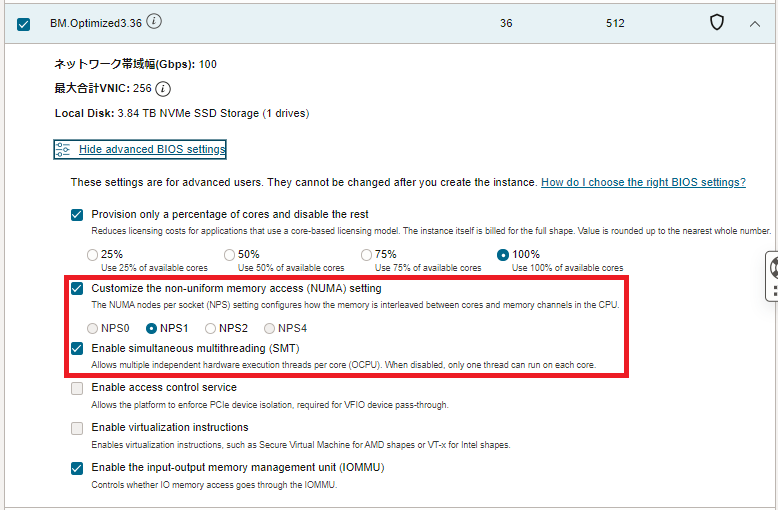

ベアメタルインスタンスは、デプロイする際にBIOSの設定を指定することが可能です。
これらの設定は、 NPS（NUMA nodes per socket）や SMT（Simultanious Multi Threading）といった、当該インスタンスの性能に影響するものが少なくありません。
本パフォーマンス関連Tipsは、これらのBIOS設定を指定してHPC/GPUクラスタを構築する方法を解説します。
0. 概要
ベアメタルインスタンスは、デプロイ時にBIOS設定を指定することが可能ですが、この中にはHPCワークロードの実行時パフォーマンスに影響する以下の項目が含まれます。
-
NPS（NUMA nodes per socket）
NPS は、CPUソケット当たりの NUMA（Non-Umiform Memory Access）ノード数を指定するBIOS設定です。
現在のサーバ用途CPUでメモリ性能を向上させるために採用されているメモリインタリーブは、インターリーブするメモリチャネルを同一NUMAノードに接続されるものに限定します。このため、NPSを適切に調整することで、あるCPUコアから見て距離的に同じメモリチャネルのみをインターリーブし、 STREAM ベンチマークのようなメモリアクセスパターンを持つアプリケーションの性能を向上させることが可能でです。例えば、AMD EPYC 9654プロセッサと同じアーキテクチャの BM.Standard.E5.192 のプロセッサは、12個の CCD（Core Complex Die）と、 I/O Die 内の UMC（Unified Memory Controller）が下図 （出典： AMD EPYC 9004 Series Architecture Overview）のように構成されており、12個の UMC が最も距離が近い関係（ローカル）にある3個の UMC 4グループに分かれています。
そこで NPS を4に設定することで、最も距離の近い3個の UMC のグループ内にメモリインターリーブを限定します。
指定可能な NPS 値は、対象のシェイプ毎に異なり、HPCワークロード向けベアメタルシェイプでは下表のようになっています。
シェイプ サポートする NPS BM.Optimized3.36 1（デフォルト）, 2 BM.Standard.E5.192 0（※1）, 1（デフォルト）, 2, 4 BM.GPU4.8 0（※1）, 1, 2, 4（デフォルト） BM.GPU.A100-v2.8 0（※1）, 1, 2, 4（デフォルト） ※1）2CPUソケットを1 NUMA ノードとして構成
-
SMT （Simultanious Multi Threading）
SMT は、CPUコア当たりに2個の論理スレッドを割当てるかどうかのBIOS設定です。
HPCワークロードにみられるCPUインテンシブなアプリケーションは、この SMT を無効化する（CPUコア当たりに1個の論理スレッドを割当てる）ことで、性能が向上することがあります。BIOS設定上 SMT を有効化してインスタンスをデプロイした場合でも、OS設定でこれを無効化することが出来ますが、BIOS設定上 SMT を無効化してインスタンスをデプロイした場合、 SMT を有効化するためにはインスタンスを再作成する必要があります。
以降では、 NPS と SMT のBIOS設定を指定して、計算/GPUノード用途のベアメタルインスタンスをデプロイする方法を解説します。
また、デプロイしたベアメタルインスタンスのBIOS設定を確認する方法も解説します。
ベアメタルインスタンスデプロイ時のBIOS設定に関するOCI公式ドキュメントは、 ここ を参照してください。
1. BIOS設定を指定したベアメタルインスタンスのデプロイ
1-0. 概要
本章は、ベアメタルインスタンスのデプロイ時、どのようにBIOS設定を指定するかを解説します。
インスタンスのBIOS設定は、 OCI HPCチュートリアル集 で解説している構築手法を前提としたHPC/GPUクラスタの計算/GPUノードの場合、以下の方法で指定します。
-
インスタンス構成 で指定
OCI HPCチュートリアル集 のOCIコンソールを使用する手動構築でHPC/GPUクラスタを構築する 場合、構築手順中で作成する インスタンス構成 にBIOS設定を指定します。 -
Terraform スクリプトで指定
OCI HPCチュートリアル集 の Terraform を使用する自動構築でHPC/GPUクラスタを構築する場合、構築手順中で作成する Terraform スクリプトにBIOS設定を指定します。
なお、 OCI HPCチュートリアル集 の HPCクラスタスタック を使用する自動構築でHPC/GPUクラスタを構築する場合、 HPCクラスタスタック がBIOS設定に対応していないため、計算/GPUノードのBIOS設定を変更することが出来ません。
また単一インスタンスをOCIコンソールからデプロイする場合は、インスタンス作成画面でBIOS設定を指定します。
以降では、BIOS設定の指定方法を以下3タイプに分けて解説します。
- インスタンス構成 で指定
- Terraform スクリプトで指定
- 単一インスタンス作成時にOCIコンソールで指定
1-1. インスタンス構成でBIOS設定を指定する方法
本章は、 インスタンス構成 でBIOS設定を指定する方法を解説します。
インスタンス構成の作成 画面の以下 イメージとシェイプ フィールドで、

Change Shape ボタンをクリックして表示される以下 すべてのシェイプの参照 サイドバーで、 ベア・メタル・マシン をクリックして表示される所望のシェイプ（ここでは BM.Optimized3.36）を選択し Show advanced BIOS settings ボタンをクリックし、

表示される以下のBIOS設定フィールドで NPS と SMT を所望の値に設定し、 シェイプの選択 ボタンをクリックします。

1-2. TerraformスクリプトでBIOS設定を指定する方法
本章は、 OCI HPCチュートリアル集 の Terraform を使用する自動構築でHPC/GPUクラスタを構築するHPC/GPUノードにBIOS設定を適用する方法を解説します。
詳細は、HPCクラスタの場合は OCI HPCチュートリアル集 の HPCクラスタを構築する（基礎インフラ自動構築編） の 0-1-2. スタック作成（リソース・マネージャ を使用する場合）か 0-2-3. Terraformスクリプト作成（Terraform CLIを使用する場合）を、GPUクラスタの場合は OCI HPCチュートリアル集 の GPUクラスタを構築する（基礎インフラ自動構築編） の 0-1-2. スタック作成 （ リソース・マネージャ を使用する場合）か 0-2-2. Terraformスクリプト作成 （ Terraform CLIを使用する場合）を参照してください。
1-3. 単一インスタンス作成時にOCIコンソールで指定する方法
本章は、インスタンスを単体でOCIコンソールから作成する場合にBIOS設定を指定する方法を解説します。
コンピュート・インスタンスの作成 画面の以下 イメージとシェイプ フィールドで、
Change Shape ボタンをクリックして表示される以下 すべてのシェイプの参照 サイドバーで、 ベア・メタル・マシン をクリックして表示される所望のシェイプ（ここでは BM.Optimized3.36）を選択し Show advanced BIOS settings ボタンをクリックし、
表示される以下のBIOS設定フィールドで NPS と SMT を所望の値に設定し、 シェイプの選択 ボタンをクリックします。
2. デプロイしたベアメタルインスタンスのBIOS設定確認
本章は、デプロイしたベアメタルインスタンスのBIOS設定を確認します。
OCIコンソールで当該ベアメタルインスタンスの以下 インスタンスの詳細 画面を表示し、 BIOS設定 タブを選択します。
表示される以下画面で、 NPS と SMT の設定を確認します。